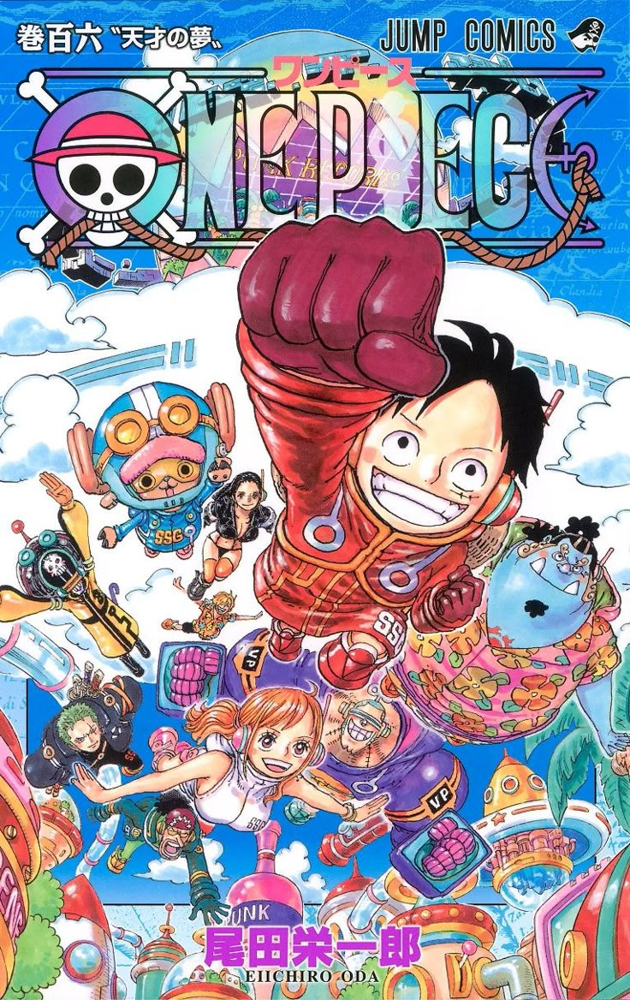

Ван Пис
О манге
«Ван Пис» (яп. ワンピース) — манга, созданная Эйитиро Одой. Публикуется с 22 июля 1997 года в журнале Weekly Shōnen Jump издательства Shueisha, на 2025 год собрана в более чем 108 томов. Аниме от Toei Animation транслируется с 1999 года. История рассказывает о Манки Д. Луффи и его команде пиратов Соломенной Шляпы, которые ищут величайшее сокровище — Ван Пис, чтобы Луффи стал Королём пиратов.
Автор: Эйитиро Ода — мангака, известный своим эпическим размахом и детализацией.
Дата выпуска: 22 июля 1997 (манга), 20 октября 1999 (аниме).
Ключевые персонажи

Манки Д. Луффи
Капитан пиратов Соломенной Шляпы. Весёлый и упрямый, мечтает стать Королём пиратов.
Ророноа Зоро
Мечник команды, стремится стать величайшим. Верный и хладнокровный боец.
Нами
Навигатор команды, мастер картографии. Любит деньги, но предана друзьям.
Санджи
Повар команды, мастер боевых искусств. Флиртует с девушками, но верен Луффи.